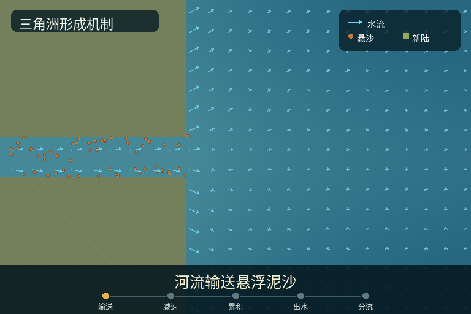

1｜泥沙进入海水后减速并形成紧凑浑浊羽流
display 32 / state 49。以下内容均由 --prepare 生成，没有加载扩散模型。


提示词 token：Tokenizer 1 正/负 73/67；Tokenizer 2 正/负 73/67，上限 77。
本页证明报告器可以读取任意数量的关键帧。 它只展示程序状态、语义层、Canny 和 token 检查，不包含模型生成结果。

display 32 / state 49。以下内容均由 --prepare 生成，没有加载扩散模型。
提示词 token：Tokenizer 1 正/负 73/67；Tokenizer 2 正/负 73/67，上限 77。
display 64 / state 100。以下内容均由 --prepare 生成，没有加载扩散模型。


提示词 token：Tokenizer 1 正/负 71/64；Tokenizer 2 正/负 71/64，上限 77。
display 78 / state 107。以下内容均由 --prepare 生成，没有加载扩散模型。


提示词 token：Tokenizer 1 正/负 70/65；Tokenizer 2 正/负 70/65，上限 77。
display 97 / state 119。以下内容均由 --prepare 生成，没有加载扩散模型。


提示词 token：Tokenizer 1 正/负 76/64；Tokenizer 2 正/负 76/64，上限 77。